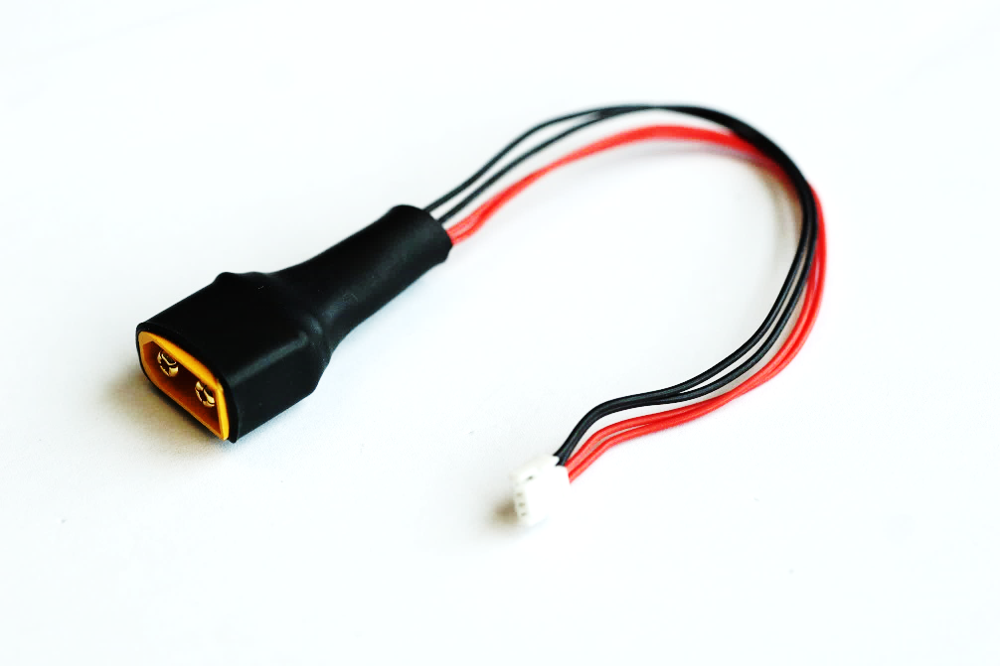
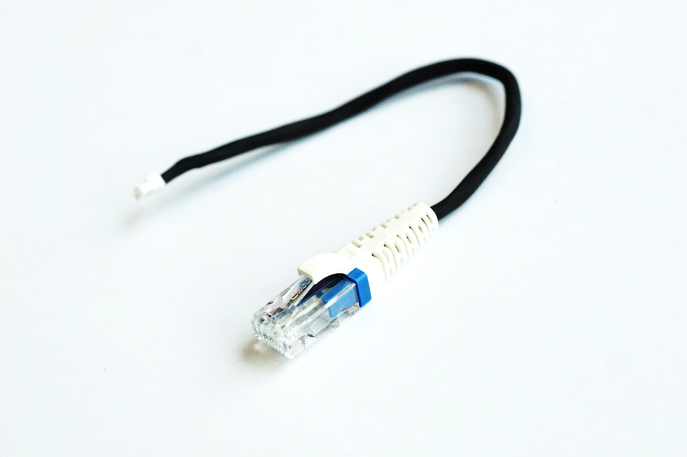
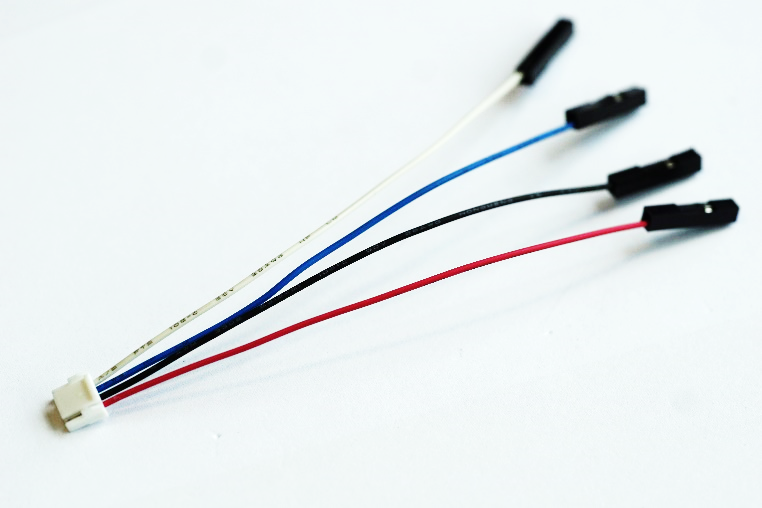

3.3 线材
3.3.1 供电线

供电线*1 :长度为15CM，线材规格28AWG
GH1.25 4P接口，红色为正极，黑色为负极
XT60平边为正极，梯形边为负极（电压为12V~26V）
3.3.2 网口连接线

网口连接线*5:长度为20CM，线材规格28AWG
网口连接线连接HOMER为GH1.25 4P，其颜色分别为：红为TX+,黑为TX-,蓝为RX+,白为RX-
3.3.3 串口连接线

串口连接线*3:长度为10CM，线材规格28AWG
串口连接线分别为：红为5V输出，黑为GND，蓝为TXD,白为RXD